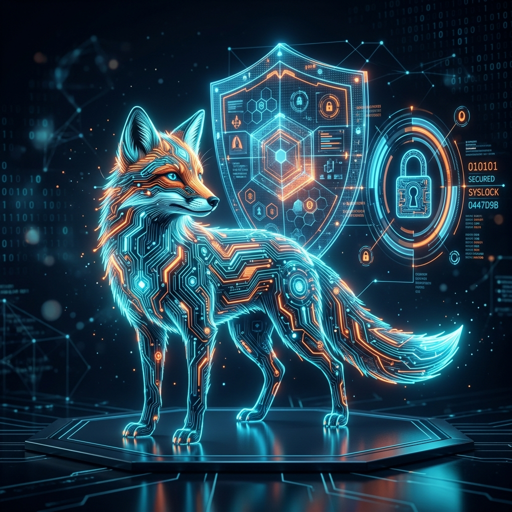

May 1, 2026
In our increasingly interconnected world, cybersecurity serves as the essential architecture of trust. As an aspiring professional, you must view cybersecurity not merely as a collection of software tools, but as a strategic discipline dedicated to safeguarding the digital infrastructure that powers modern society. According to the National Initiative for Cybersecurity Careers and Studies (NICCS):
“Cybersecurity is the activity or process, ability or capability, or state whereby information and communications systems and the information contained therein are protected from and/or defended against damage, unauthorized use or modification, or exploitation.”
In Plain English: Cybersecurity is the proactive practice of building and maintaining a digital "shield" to ensure that information and the systems that store it remain safe from theft, damage, or manipulation by unauthorized actors.
To build this shield effectively, one must first understand its three fundamental pillars: the CIA Triad.
The CIA Triad is the foundational framework used to guide security policies and select the appropriate technologies to protect an organization's assets. Before applying technical controls, we must define our three core goals:
| Principle | The Goal | Real-World Protection |
|---|---|---|
| Confidentiality | Protecting private data from unauthorized access. | Data encryption, secure DNS, and strict user access controls. |
| Integrity | Guaranteeing that data remains accurate and stable. | File permissions, version control, and Web Application Firewalls (WAF). |
| Availability | Ensuring authorized users have reliable access. | Hardware maintenance, system updates, and DDoS protection. |
The clothing retailer Pacsun provides a clear example of the CIA Triad in action. Faced with frequent cyberattacks during high-traffic sales events, they implemented a Cloudflare security suite that bolstered all three pillars, resulting in a 27% boost in system performance:
While the CIA triad provides the strategic goals, encryption is the primary technical tool used to achieve them.
The term Cryptology encompasses the entire study of secure communication. It is divided into two distinct, competing branches:
The methodology of secret writing has evolved significantly from ancient techniques to modern digital bits:
Unlike classical methods, modern cryptography uses publicly known mathematical algorithms.
The Paradigm Shift: Security no longer depends on hiding the process, but on the secrecy of the key. Modern systems use binary bit sequences and complex math to ensure that without the secret key, extracting information is mathematically impossible.
Modern encryption is categorized primarily by how it handles these "keys" to the information.
Encryption transforms unencrypted plaintext into coded ciphertext. Choosing the right method depends on your priorities for speed versus security.
| Feature | Symmetric Encryption | Asymmetric Encryption |
|---|---|---|
| Key Usage | Uses the same secret key for both encryption and decryption. | Uses a Public/Private key pair (different keys for each task). |
| Speed | Extremely high speed; efficient for bulk data. | Slower due to higher mathematical complexity. |
| Primary Benefit | Simplicity and efficiency for internal data. | Higher security; enables safe communication over unprotected networks. |
| Common Use | Local file storage and database encryption. | HTTPS (web browsing), secure email, and digital signatures. |
Key Detail: The RSA (Rivest-Shamir-Adleman) algorithm is the most popular example of asymmetric encryption. It allows a user to share their public key with anyone in the world while keeping their private key secret, enabling secure communication across the public internet.
Understanding the motivations of different actors allows us to anticipate and mitigate specific threats.
The Evolving Threat: The landscape is becoming more dangerous as hackers begin to use Artificial Intelligence as a weapon to create sophisticated malware (Thomas, 2020). A recent example is the SteelFox malware, which utilizes the BYOVD (Bring Your Own Vulnerable Driver) technique to gain system privileges and steal data, highlighting how hackers constantly seek new loopholes in legitimate software.
Emerging technologies are redefining the "how" of the CIA Triad, moving toward decentralized and physics-based defenses.
Blockchain provides a decentralized, immutable ledger where transactions are cryptographically linked, creating an Immutable Audit Trail.
While traditional encryption is based on math, quantum cryptography is based on the laws of physics.
The No-Cloning Theorem: This principle states that data in a quantum state cannot be copied. If an eavesdropper attempts to intercept the data, the wave function collapses, triggering a change in the quantum state that immediately alerts the authorized owner to the intrusion.
Technological defenses are powerful, but personal habits remain the first line of defense. Based on industry best practices and common system vulnerabilities, you should apply this checklist to your digital life immediately:
The CIA Triad and encryption are the bedrock of cybersecurity. By mastering these fundamentals, you move from being a passive user of technology to a prepared defender of the digital frontier.